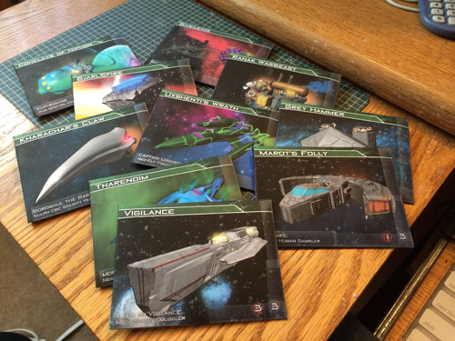

SP
Spiff
2014-06-18 00:32 UTC
#1
I'm not a fan of loose cards in the box, so I made tuckpacks for each of the SFS's 8-card starting decks. On the tuckpack is the ship's name, the pilot's name/profession, the ship's starting weapons/armor, and a blurb about how the ship plays (thanks to Donner for posting the ship summaries!) to make it easy to figure out which ship you want to play.
These are available on my GSF site now for anyone who's interested.

